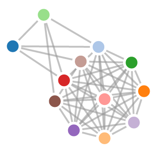

| mutationData | → | graphs | → | SpaceOfPathways | → | ShapeMeasurements |
| X |  | G |  | (K) |  | H*((K)) |
Abstract
It has been recognized that a key step towards defeating cancer is a deep
understanding of the genomic changes that occur before and during the
tumorgenesis. Our work attempts to contribute to this understanding through the
proposal of a novel topological framework and to introduce the use of quantum
annealing to help with large scale computations one faces in genomic data analysis.
We hope that, within this framework and armed with the computational capabilities
of quantum computers, a new type of questions about the data can be asked i.e.,
a different kind of hypotheses can be formulated. We have used in our analysis
real (TCGA) mutation data of two types of tumour: Acute myeloid leukemia and
Glioblastoma multiform. As a first application, we explain how the noisy data
problem in the data-driven pathways discovery is dealt with within this framework
using persistent homology. We present a complete persistent homology-based
algorithm built on the top of our quantum procedure. For both datasets, using our
homology based quantum pipeline, we have recovered the same pathways previously
found in addition to new additional pathways.
Key words: Cancer genomics, mutation data, acute myeloid leukemia, glioblastoma multiform,
quantum computers, persistent homology, topological data analysis.
Cancer is driven by somatic mutations that target signalling and regulatory pathways that control cellular proliferation and cell death [13]. Understanding how this happens is of paramount importance in order to improve our ability to intervene and attack cancer.
Since the advent of DNA sequencing technologies, our understanding has progressed
enormously. Current advances range from the introduction of a single anti-cancer agents, which
simply bind with growth factor receptors stopping abnormal cell proliferations (For
instance, in the context of breast cancer, Herceptin antibody stops cells abnormal
proliferation signals by binding with the excess of growth factor receptors on the cell surface
caused by point mutations in the gene Her2. Gleevec is a second example. It is used
to treat chronic myeloid leukemia which is a type of blood cell tumour due to an
inappropriate gene fusion product of a translocation in chromosomes 9 and 22. The
resulting fusion gene BCR-ABL has an increased kinase activity resulting an increase in
proliferation signals. Similarly to Herceptin, Gleevec blocks the growth signals the
abnormal fusion gene generates and thus prevents the cell proliferation) to more
sophisticated approaches such as immunotherapy which activates the immune system against
cancer cells and as well as the use of combinations of therapeutic agents to attack
multiple pathways fundamental in cancer development, preventing resistance from
occurring.
Sadly, cancer morbidity is still very high and our understanding is still incomplete
particularly for the advanced stages of the tumorigenesis. As mathematicians and
scientists in computation, we are concerned about two reasons related to this limitation:
1) not all relevant pathways have been identified 2) and more fundamentally, we
don’t know how these mutations affecting different pathways work together to cause
cancer.
The work discussed in the present paper is part of our series of two papers which intent to join
efforts in elucidating these two problems in particular. The other paper of this series is [1]. Our
contribution is threefold:
The first contribution has been detailed and compared to other available approaches in [1]. The last two are the subject of the present paper which we now outline its main ideas. Our topological journey departs from the fact that signalling or regulatory pathways are in fact independent sets (modulo some notion of tolerance introduced in the next Section to accommodate noise in the data as well as potential interactions between pathways constituents such as crosstalk and synthetic lethality) and thus when grouped together they define a simplicial complex (i.e., a collection of objects called faces closed under some boundary map i.e., the boundary of a face is again a face. A clique (resp. independence) complex of a graph G is a simplicial complex whose faces are cliques (resp. independent sets) of G and boundary map is the inclusion of sets) . This vantage point connects us to the marvellous world of topology where simplicial complexes are the prototypes of spaces with shapes. Our journey is all about exploring the usefulness of this notion of shape in cancer genomics. In fact, all what is presented here (point 2 and 3 above) is articulated around the sequence of assignments:
where:
We have applied our approach to two different TCGA mutation data: Acute myeloid leukemia
(AML) [11] and Glioblastoma multiform (GBM) [10]. For both the data, we have computed the
assignment tumour space of pathways using persistent homology. Interestingly, our
calculation also shows that the space of pathways for AML mutation data is homotopy
equivalent to a sphere while in the case of GBM data, the space of pathways is homotopy
equivalent to figure eight (genus-2 surface) – See Conclusion. Computations here are performed
using D-Wave 2X quantum computer.
Different errors occurring during data preparation (i.e., sequencing step etc) affect the robustness of the data. This implies that pathways computed with our quantum procedures are most likely to be affected by the noise and can not be considered as robust finding. This obligates us to proceed carefully. Indeed, the assignment above is done as follows:
|
| (0.1) |
where for each graph Gε two genes are connected if they have harboured mutations concurrently for at least ε patients. This yields a second filtration of simplicial complexes (we call a such filtration, a persistent pathway complex)
|
| (0.2) |
where Kε is one of the three complexes we define below.
This (practical) version of homology is what we refer to as persistent homology. It tracks the
persistent topological features through a range of values of the parameter; genuine
topological properties persist through the change of the parameter while noise does not (all
these will be made precise below). The mapping Gε Kε is functorial i.e., it sends a
whole filtration (i.e., 0.1) into a filtration (i.e., 0.2) . In other words, it is not only
sending graphs to simplicial complexes but it is also preserving their relations. This
functoriality is at the heart of persistent homology and makes the whole tracking makes
sense.
Kε is functorial i.e., it sends a
whole filtration (i.e., 0.1) into a filtration (i.e., 0.2) . In other words, it is not only
sending graphs to simplicial complexes but it is also preserving their relations. This
functoriality is at the heart of persistent homology and makes the whole tracking makes
sense.
Consider a mutation data for m tumors (i.e., patients), where each of the n genes is tested for a somatic mutation in each patient. To this data we associate a mutation matrix B with m rows and n columns, where each row represents a patient and each column represents a gene. The entry Big in row i and column g is equal to 1 if patient i harbours a mutation in gene g and it is 0 otherwise. For a gene g, we define
|
| (0.3) |
Definition 1
The mutation graph associated to B and ε > 0 is the graph Gε whose vertex set is the set of genes and whose edges are pairs of genes (g,g′) such that
 | (0.4) |
There are evidences [12, 14] that pathways are independent sets of mutation graphs (although not stated graph theoretically).
We would like to assign to the mutation graph an independance complex. We present below three different functorial ways to so.
Definition 2 Given a mutation graph Gε, its persistent pathway complex Kε is the independence complex of Gε (or equivalently, the clique complex of Gε).
In addition to Kε, we also define the persistent pathway complexe Kη.
Definition 3 The persistent pathway complex Kη is defined as follows. Fix ε = ε0 and let G = Gε0. The complex Kη is the complex generated by all independent sets S of G with coverage
|
| (0.5) |
(the counting g ∈ S is without redundancy). The generation means taking powersets.
The following definition is also valid for the persistent pathway complex Kη.
Definition 4 The space of pathways of a persistent pathway complex Kε is the nerve generated by the facets of the complex i.e., the simplicial complex where {i0,,iℓ} is a simplex if and only if the facets indexed with i0,,iℓ have a non empty intersection. We denote the space of pathways by ε.
The space of pathways is visualized through its 1-skeleton: the graph with pathways as vertices and two pathways are connected if they intersect (See Figures 3 and 4).
The construction of the independence complex consists of enumerating all independent sets in
the given graph. This paper advocates the use of quantum computing for such expensive
operations. We note, however, the existence of different classical heuristics for a such
enumeration task which are available for small graphs. For instance, Bron and Kerbosch’s
algorithm [2, 4] is used in Python graph library networkx. This algorithm runs out of memory
for large graphs.
Recall that our plan is to compute the persistent homology of the independence complex Kε. We have explained that this is simply computing the homology of Kε for a range of increasing values of the parameter ε. In this section we explain this notion of homology (which we have introduced as measurements of the shape of the space Kε). For simplicity, we drop out the subscript ε from the complex Kε. It is also more convenient to introduce homology for clique complexes (for independence complexes, it suffices to replace, everywhere below, cliques with independent sets).
The homology of the simplicial complex K (now a clique complex of G) is a sequence of
ℤ-vector spaces (i.e., vector spaces with integer coefficients):
|
| (0.6) |
defined as follows: The zeroth space H0(K) is spanned by all connected components of K.Thus, the dimension β0 := dim(H0(K)) gives the number of connected components of the space. The first homology space H1(K) is spanned by all closed chains of edges in G which are not triangles; in this case, the dimension β1 := dim(H1(K)) gives the number of holes in the space. The second space H2(K) is spanned by all 2-dimensional enclosed three dimensional voids (See caption in Figure 2 below) which are not tetrahedra. Higher dimensional spaces are defined in a similar way (although less visual). The dimensions βi := dimHi are called Betti numbers and by now the reader should see that indeed, homology measures the shape of the given space.
Now, lets us go back to persistent homology and make this notion a bit more precise. For that,
let us reintroduce the persistent parameter ε and let Kε be again an independence complex. It
is clear that if |Patients(g) ∩ Patients(g′)|≥ ε1 and ε1 ≥ ε2 then the pair (g,g′), which is an
edge in Gε1, is also is an edge in Gε2. This means that Gε1 is a subgraph of Gε2, thus, we have
Kε2 ⊂ Kε1 whenever ε1 ≥ ε2 (since an independent set for a given graph is also independent set
for any of its subgraphs). The mapping ε Kε is functorial. It turns out that homology itself is
functorial and all this functoriality is the mathematical reason why the following is
correct: one can track the Betti numbers over a range of values ε1 ≥ ε2 ≥ ε3 ≥
Kε is functorial. It turns out that homology itself is
functorial and all this functoriality is the mathematical reason why the following is
correct: one can track the Betti numbers over a range of values ε1 ≥ ε2 ≥ ε3 ≥ and consider the subrange where the Betti numbers are not changing (significantly).
Pathways within this subrange are considered to have passed our test and declared robust
computation.
and consider the subrange where the Betti numbers are not changing (significantly).
Pathways within this subrange are considered to have passed our test and declared robust
computation.
Here we will first introduce quantum computation in general and quantum annealing in particular. We conclude this section by pinpointing to where quantum computing (precisely, our quantum algorithms [5] and [1] is used within the proposal of this paper.
Quantum computers use non-classical and counterintuitive features of quantum mechanics, such
as superposition and tunnelling, to perform large scale calculations exponentially faster than
classical processors. In order to exploit the capabilities of quantum computers, the given
problem needs to be embedded into the quantum realm, that is, represented as a quantum
system. An example of that is the binary quadratic optimization problem
|
| (0.7) |
which can be mapped as finding the ground state of an Ising model (a particularly interesting type of quantum systems). The binary variables in the objective functions are replaced with Pauli operators. The values of a given variable xi are implemented as eigenstates of the corresponding Pauli operator. The superposition of the two values is called a qubit (thus, each variable introduces a qubit). The quadratic monomials Qijxixj between two variables xi and xj are understood as couplings between the two corresponding operators with coupling strength Qij. Quantum algorithms favour the correct value of xi by amplifying the corresponding coefficient in the superposition.
Adiabatic quantum computations (AQC) [6] are particular type of quantum algorithms which
solve the ground state problem using the tunnelling feature. The quantum system, which is
made time dependent by perturbing the problem Hamiltonian, evolves by tunnelling through
the local minima to the desired solution. This is radically different from the classical thermal
evolution where the system might get stuck at a local minima if the potential barrier around it
is significant. D-Wave implements AQC through a particular perturbation scheme [8]. It
involves a particular type of coupling (a particular configuration of the spins) and a particular
evolution path (i.e., perturbation terms). From the user point of view, it suffices to enter,
through a cloud based interface, the coefficients of the cost function (which will be
understood as coupling and external field strengths) and gets the answer as string of
binary.
There are two computational bottlenecks in our proposal detailed in the previous sections. The
first is the construction of the (facets of the) simplicial complexes and the second being the
homology calculation itself. These two computations scale exponentially with size of the input
(i.e., the number of genes in the mutation data) which makes them beyond the capabilities of
classical computers and can only handled using quantum computing. Both questions
have been discussed in details in [5] and [1] so we refrain from elaborating on them
here.
We have applied our approach to two mutation data. Acute myeloid leukemia [11] and
Glioblastoma multiform [10]. For both data, we have computed the assignment tumour  pathways through persistent pathway complexes (thus declared robust output). The
complete result is presented in long tables (not included here but can be provided
upon request). Interestingly, our calculation also shows that AML data is homotopy
equivalent to a sphere while GBM data is homotopy equivalent to figure eight (genus-2
surface).
pathways through persistent pathway complexes (thus declared robust output). The
complete result is presented in long tables (not included here but can be provided
upon request). Interestingly, our calculation also shows that AML data is homotopy
equivalent to a sphere while GBM data is homotopy equivalent to figure eight (genus-2
surface).
The data has a cohort of 200 patients and 33 genes ([11]). We have chosen the coverage threshold η = 80 patient. We also neglected all genes which have less than 6 patients. These numbers are chosen using what one might call the persistence of persistence homology: stability of barecodes for pairs (ε,η) ≥ (6, 80)) while barecodes for pairs less than (6, 80) exhibit strong variations. This is also consistent with the fact that choosing genes with less than 5 or 6 patients are not common in such studies (genes with low number of patients are not considered robust enough and are very prone to errors. It is an extra precaution one takes which is commonly used in the field). Now for the numbers of patients and coverage we have chosen, the Betti numbers are computed for various values of ε in the table below:
| ε | |ε| | density(ε) | βi |
| 1 | 6 | 0.86 | 1, 0, 0, |
| 2 | 84 | 0.97 | 1, 0, 0, |
| 3 | 50 | 1 | 1, 0, 0, |
Figure 3 below gives the (1-skeleton) of the nerve ε := (Kε) for ε = 1. The Betti numbers βi are not changing thus ε = 1 is a reasonable choice. Recall that each node represents a pathway and two pathways are connected in they intersect (as sets of genes). We have used different colours to different pathways (no other meaning for the colouring). The nodes are as follows:
| color | genes in the pathway |
| Blue | ’PML.RARA’, ’MYH11.CBFB’, ’RUNX1.RUNX1T1’, ’TP53’, ’NPM1’, ’RUNX1’ |
| Blue light | ’PML.RARA’, ’MYH11.CBFB’, ’RUNX1.RUNX1T1’, ’TP53’, ’NPM1’, ’MLL.PTD’ |
| Orange | ’PML.RARA’, ’MYH11.CBFB’, ’RUNX1.RUNX1T1’, ’DNMT3A’ |
| Orange light | ’Other Tyr kinases’, ’MYH11.CBFB’, ’MLL.PTD’, ’NPM1’ |
| Green | ’MLL-X fusions’, ’TP53’, ’FLT3’ |
| Green light | ’Other Tyr kinases’, ’MYH11.CBFB’, ’DNMT3A’, ’MLL-X fusions’ |
The second mutation data is taken from [10]. It has 84 patients and around 100 genes. Approximately, 70% of the genes have very low coverage so we removed them from the data; precisely we have removed all genes with less than 10 patients. We have used the complex Kη and we have ε fixed to 7. Concerning the choice of these numbers, the same justification, given above, applies here.
| η | |η| | density(η) | βi |
| 66 | 15 | 0.73 | 1, 2, 0, |
| 67 | 14 | 0.74 | 1, 2, 0, |
| 68 | 12 | 0.72 | 1, 2, 0, |
| 69 | 6 | 0.6 | 1, 0, 0, |
| 70 | 50 | 1 | 1, 0, 0, |

The following table provides the legend for the Figure 4 corresponding the GBM
data:
| color | genes in the pathway |
| blue | RB1, NF1, CYP27B1, CDKN2B |
| blue light | RB1, NF1, MDM2, AVIL-CTDSP2, CDKN2B |
| orange | TP53, MDM2, OS9, CDKN2A |
| orange light | TP53, MDM2, AVIL-CTDSP2, CDKN2A |
| green | TP53, MDM2, DTX3, CDKN2A |
| green light | RB1, NF1, CDK4, CDKN2B |
| brown | TP53, CDK4, CDKN2A |
| brown light | TP53, CYP27B1, CDKN2A |
| purple | TP53, MDM2, AVIL-CTDSP2, MTAP |
| purple light | TP53, MDM2, DTX3, MTAP |
| red | RB1, NF1, MDM2, OS9, CDKN2B |
| pink | TP53, MDM2, OS9, MTAP |
Our goal in this paper is the introduction of quantum computation in pathway computations and the proposal to use topological analysis on the space of pathways. We have demonstrated both through real data where have reproduced results of earlier works in addition to new findings which we hope will have some impact in the field. We have argued that the consideration of the pathways collectively, that is, as a topological space not only brings all the algebraic machinery (eg., persistent homology showcased here) but also might help in revealing novel relations between these pathways. Indeed, we have seen that the homology in the case of AML indicates that the mutation data has a shape of a sphere. However, in the case of GBM, we get a final set of pathways which has the topology of a double torus (or more technically a genus-2 surface). This intriguing observation raises the question of whether this fact translates into a new biological understanding about cancer which will be astonishing. Such a question is an example of the new type of hypotheses one can now formulate about the data and that target the connections between the pathways (global properties of the set of pathways). This might help in revealing some indications on the way mutations work collectively in causing cancer.
We thank Dr. G. Robertson (BC Genome) and Dr. S. Rezaei for their constructive feedback and comments that greatly improved the manuscript.
[1] H. Alghassi and R. Dridi. Quantum annealing algorithms in cancer genomics - in progress. 2016.
[2] C. Bron and J. Kerbosch. Algorithm 457: Finding all cliques of an undirected graph. Commun. ACM, 16(9):575–577, Sept. 1973.
[3] G. Carlsson. Topology and data. Bull. Amer. Math. Soc. (N.S.), 46(2):255–308, 2009.
[4] F. Cazals and C. Karande. A note on the problem of reporting maximal cliques. Theoretical Computer Science, 407(1):564 – 568, 2008.
[5] R. Dridi and H. Alghassi. Homology computation of large point clouds using quantum annealing. arXiv:1512.09328, 2015.
[6] E. Farhi, J. Goldstone, S. Gutmann, and M. Sipser. Quantum Computation by Adiabatic Evolution. eprint arXiv:quant-ph/0001106, Jan. 2000.
[7] D. Hanahan and R. A. Weinberg. The hallmarks of cancer. Cell, 100(1):57–70, 2016/09/19.
[8] M. W. Johnson, M. H. S. Amin, S. Gildert, T. Lanting, F. Hamze, N. Dickson, R. Harris, A. J. Berkley, J. Johansson, P. Bunyk, E. M. Chapple, C. Enderud, J. P. Hilton, K. Karimi, E. Ladizinsky, N. Ladizinsky, T. Oh, I. Perminov, C. Rich, M. C. Thom, E. Tolkacheva, C. J. S. Truncik, S. Uchaikin, J. Wang, B. Wilson, and G. Rose. Quantum annealing with manufactured spins. Nature, 473(7346):194–198, 05 2011.
[9] S. Lloyd, S. Garnerone, and P. Zanardi. Quantum algorithms for topological and geometric analysis of data. 7:10138 EP –, 01 2016.
[10] T. C. G. A. R. Network. Comprehensive genomic characterization defines human glioblastoma genes and core pathways. Nature, 455(7216):1061–1068, 10 2008.
[11] T. C. G. A. R. Network. Genomic and epigenomic landscapes of adult de novo acute myeloid leukemia. New England Journal of Medicine, 368(22):2059–2074, 2013. PMID: 23634996.
[12] B. Vogelstein and K. W. Kinzler. Cancer genes and the pathways they control. Nat Med, 10(8):789–799, 08 2004.
[13] R. Weinberg. The Biology of Cancer.
[14] C.-H. Yeang, F. McCormick, and A. Levine. Combinatorial patterns of somatic gene mutations in cancer. The FASEB Journal, 22(8):2605–2622, 2008.